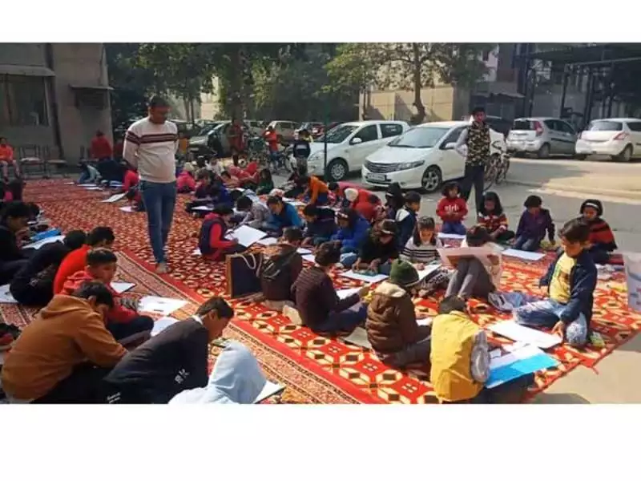
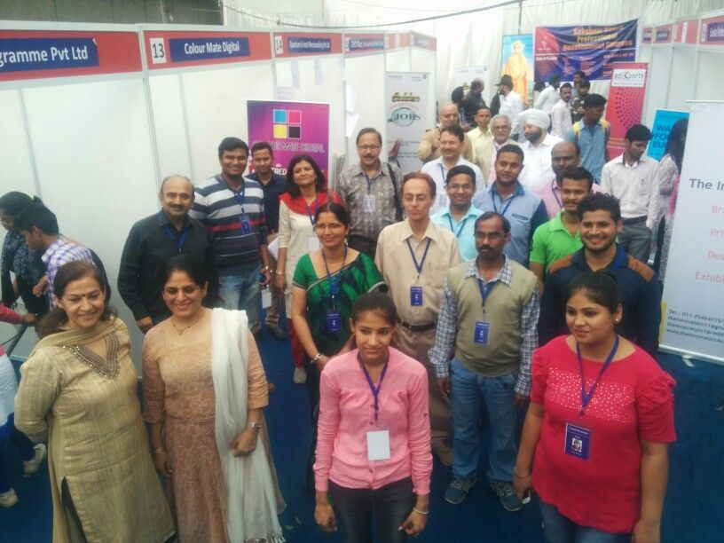

ABOUT....
Saksham Bharti
is organizing Pre-Admission Career Counseling sessions and Scholarships Program for Higher Education on Need Cum Merit Basis for 12th Passed out Students. For more details contact to Saksham Bharti Centers. Download Scholarship Form | Online Scholarship Form
egistration is going on for ‘entry to junior’ level job positions in well established organisations at all centers of Saksham Bharti at Ragubir Nagar, Rajauri Garden, Sec-2, Dwarka, Vikas Nagar, Uttam Nagar and at Sec-69, Noida.
SAKSHAM BHARTI IS AN NGO....
“Aksham se Saksham”
Saksham Bharti is an NGO, registered under the Registration of Society Act since 2000. It is managed and run by a group of professionals and entrepreneurs from various walks of life. Root statement of Saksham Bharti is “Aksham se Saksham” (Incompetence to competence).

Events of Saksham Bharti....
.jpg)
Saksham Bharti :-
is currently running four regular Centers, wherein Computer Training (DTP & Basic), Computer Hardware Training, Beauty Culture, Stitching and Tailoring is given at nominal fee. Saksham Bharti Supports its students from the time they are enrolled in its program till they are employed. It conducts courses in English Speaking personality & skill development workshops last but not the least Saksham Bharti organises Job fairs on a regular basis.
pays special attention to the financial support to the students, it pays scholarship on needs cum merit basis at the primary and higher Education level

Drawing Competition:-
are a great way to stimulate a child’s imaginative skill, creativity as well as a competitive spirit to win. The objective for organizing such competitions is not only to develop creative talents of the children but also to enable them to gain from meaningful and varied interaction on various social awareness topics like health and hygiene, Swach Abhiyan and other social issues. Since 2000 Saksham Bharti is organizing drawing competitions. It started with one center at Tagore Garden and now it conducts competition at 17 Centers, in Delhi and NCR Region. More than 6000 children participate in the annual Competitions. The drawing in the brochure is made by a student in 2016 Drawing Competition.

Legal Awareness Workshop:-
Saksham Bharti on regular intervals organize Legal Awareness Workshop to introduce and explain the Rule of Law. How Law methodizes the systems and how without Law there would be chaos and rivalry between social groups. During these workshops, safety and security of women remains in special focus, existing biases against women and the reasons for rise in crimes against women and how the awareness about women related laws can help in creating a safe environment for all. In last workshop, a reference containing the recent amendments in Rape Laws was distributed for the record and information of the participants. These workshops develop ability to understand the Law, to draw conclusions and take action.

Career Counseling:-
Which career to choose is always a problem particularly for those who are first generation school goers. There is no doubt that career counselling sessions help the students to know the pros and cons of the different streams and the career path it offers, it also helps them in making informed choices and choosing a field that is in tune with their skills and their job expectations. Thus, with the help of career counselling, most of the students choose the right career path, which ultimately helps them to get their desired job. Saksham Bharti holds career counseling sessions with schools, it conducts sessions concerning career in Accounts, CA, Law, Teaching, Engineering, Armed forces and Delhi Police etc.

Medical camps:-
Medical camps: Saksham Bharti organizes medical camps on regular intervals .Doctors are invited to conduct dental checkup , eye checkup camps and various other health camps, where needy are examined and the requisite medicines given. If needed they are referred for free specialized treatment too. Special talks and workshops are conducted regarding nutritious diet and menstrual hygiene delivered by experts.

Job placement:-
Saksham Bharti organizes job fairs on regular basis to provide suitable jobs from various companies during the year and one mega annual Job Fair namely “Swami Vivekanand Aajeevika Mahotsav”. Its third annual Job Fair was held on 8th of March – 2016. [expand title=”Read More”]It arranges jobs in Computer operations, Retail Sales, accounts, Field Boys, Office Assistants etc. There are about 40 companies from different segments which employ job seekers from junior to middle level positions.[/expand]
Computer Basic & DTP:-
Introducing computer education early lays the foundation for many careers. Computer plays a significant role in one’s personal and professional development and is one of the indispensable skill. Saksham Bharti is providing training in Tally, Animation and DTP etc.[expand title=”Read More”]It also runs courses in association with MSME (Ministry of Micro Small & Medium Enterprises) Govt. of India. Sakaham Bharti has trained more than 2500 students in the past few years.[/expand]

Beauty culture training:-
Saksham Bharti trains young girls in beauty culture also. Considering the demand of the day when females from all walks of life, from startas visit beauty saloons and spend some part of their income on beauty culture.
saksham bharti staff:-
hen females from all walks of life, from startas visit beauty saloons and spend some part of their income on beauty culture. [expand title=”Read More”]Saksham Bharti found that for girls it is a very useful skill as with this they will meet their and their family’s requirements and will also be able to earn without much of investment and with flexi timings.[/expand]